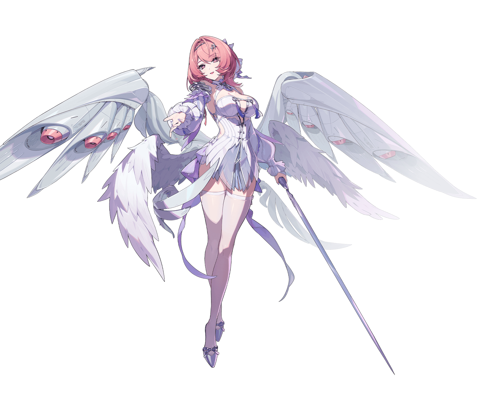

IN MY COLLECTION / ZENLESS ZONE ZERO
蕾米埃尔· 丹
REMIELLE DAN
这么说来，我们是…「共犯」？这听起来要比「舞伴」更让人心跳加速呢~
角色语录
关于这份偏爱
认识这个角色
先把喜欢收藏在这里，理由以后慢慢写。
写一点代码，收藏一些灵感。
这里是我的作品、日常，和还没完成的想法。
一些小工具，一些新尝试。
把脑海里的「要不试试」，变成看得见的东西。
绝区零风格的 Komari 监控主题，支持实时图表、响应式布局与自定义背景。
查看 GitHub （在新标签页打开）基于 AnythingLLM 的 RAG 知识库，支持回答中的事实核查与原文溯源。
查看 GitHub （在新标签页打开）
思绪不用排好队。
留下一点记录，就已经很好。
你好，我是loutaiyue。喜欢二次元，也喜欢把脑海中的小想法变成可以看见、可以使用的东西。
这个频道收纳我的项目、随笔和生活碎片。内容还在慢慢生长，欢迎随时回来看看。
翻翻我的私人收藏私人收藏，请随意翻阅。

IN MY COLLECTION / ZENLESS ZONE ZERO
REMIELLE DAN
这么说来，我们是…「共犯」？这听起来要比「舞伴」更让人心跳加速呢~
角色语录
先把喜欢收藏在这里，理由以后慢慢写。
喜欢的事物，慢慢收藏。